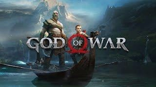

- Year: 2018
- Genre: Action, Adventure, Mythology
- Developer: Santa Monica Studio
- Platforms: PlayStation 4
- Awards: Game of the Year (GOTY) 2018
About the Game
God of War is an action-adventure game developed by Santa Monica Studio. It follows Kratos, now a father, as he embarks on a deeply personal journey with his son, Atreus, in a world inspired by Norse mythology.
Key Features
- Emotional Story: A deeply personal narrative exploring the relationship between Kratos and Atreus.
- Combat System: A revamped combat system with the Leviathan Axe and close-quarters combat.
- Open World: Explore a semi-open world filled with secrets, side quests, and lore.
- Visuals and Sound: Stunning visuals and a powerful soundtrack enhance the experience.
- Character Development: Kratos' growth as a father and Atreus' coming-of-age story are central themes.
Why It Won GOTY 2018
- Narrative Depth: The game's emotional storytelling resonated with players and critics.
- Technical Achievement: The game's visuals and performance were praised as a showcase for the PlayStation 4.
- Combat Innovation: The new combat system was widely acclaimed for its depth and satisfaction.
- Cultural Impact: God of War redefined the franchise and set a new standard for action-adventure games.
- Critical Acclaim: The game received universal acclaim and numerous awards.